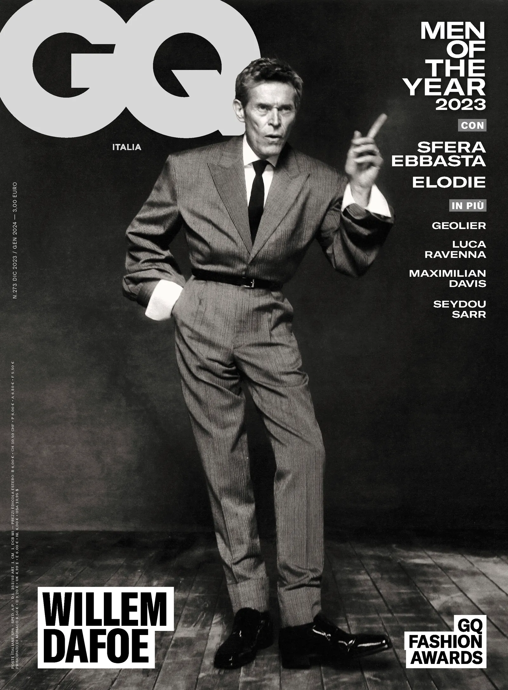
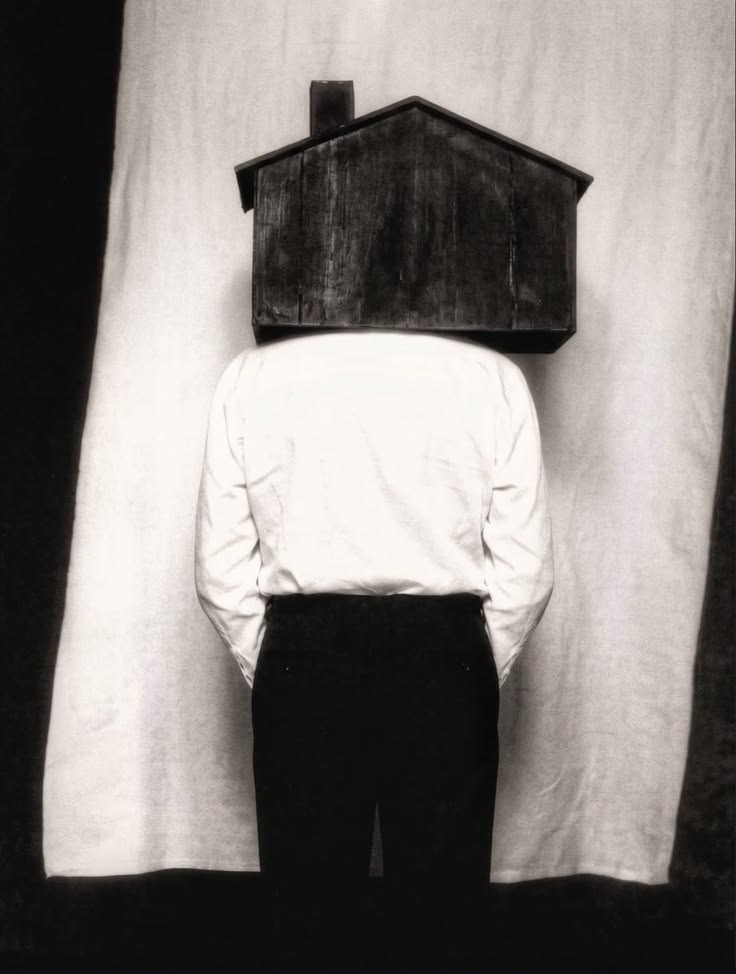
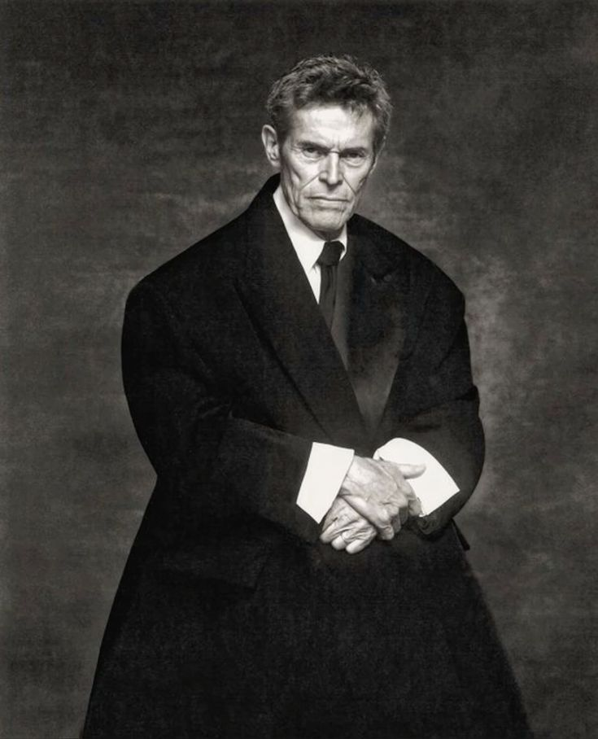
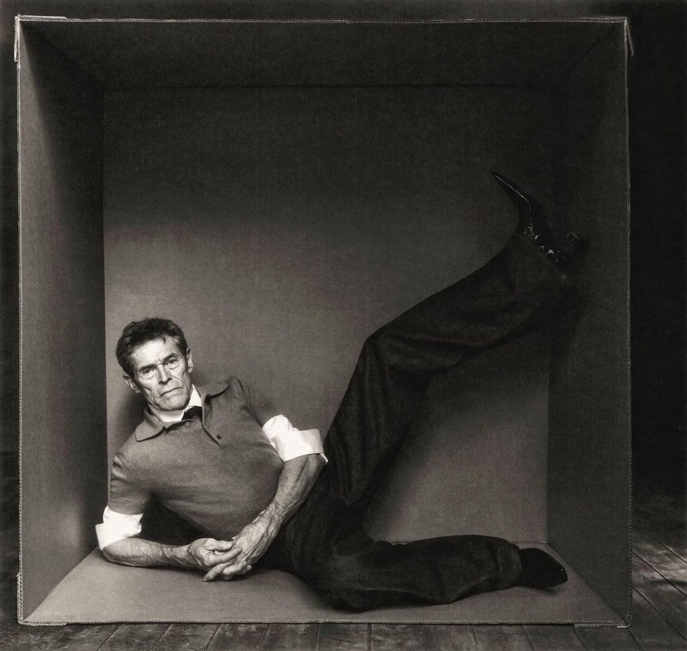

GQ Italia 2023
Haz clic y descubre la portada

Dale click para mirar la entrevista completa La sesión rompió con los retratos tradicionales de revista, apostando por un estilo teatral, excéntrico y experimental que resalta las facciones expresivas y la presencia física del actor.



"Nunca decidí ser actor. Seguí situaciones, personas y circunstancias. Luego, después de hacerlo durante un tiempo, pensé: "Bueno, creo que soy actor porque no estoy haciendo nada más"